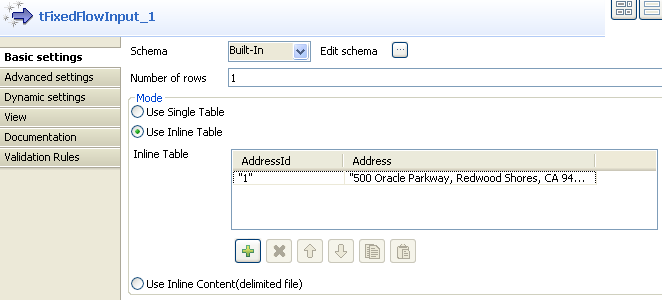
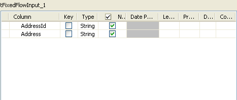
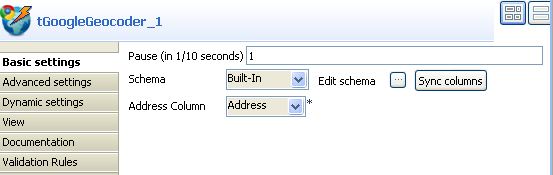
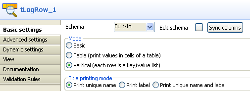
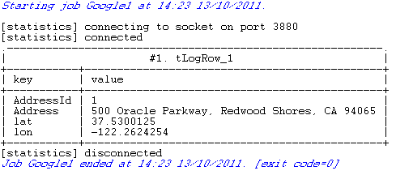

![[Warning]](../images/warning.png) | |
This component will be available in the Palette of the studio on the condition that you have subscribed to the relevant edition of Talend Enterprise Data Quality. |
|
Component family |
Data Quality/Address | |||||||
|
Function |
tGoogleGeocoder accesses the Google Geocoding API over HTTP request to obtain geographic coordinates according to the address information you provided.
| |||||||
|
Purpose |
tGoogleGeocoder allows you to converts human-readable addresses into geographic coordinates. | |||||||
|
Basic settings |
Pause(in 1/10 seconds) |
Time break between http requests for geographic information record. By default, the value for this field is 1. | ||||||
|
|
Schema and Edit Schema |
A schema is a row description, i.e., it defines the number of fields to be processed and passed on to the next component. The schema is either built-in or stored remotely in the Repository. | ||||||
|
|
Address column |
From this list, select a parameter to be used in sending Geocoding request to Google Geocoding API. Parameters in this list are predefined in the schema of input data. | ||||||
| Sync columns | Click this button to retrieve schema from the previous component connected in the Job. | |||||||
|
Advanced settings |
import |
Customize this field to import Java class for tGoogleGeocoder. By default, you do not have to modify this part. | ||||||
| tStatCatcher Statistics |
Select this check box to collect log data at the component level. | |||||||
| Enable parallel execution |
Select this check box to perform high-speed data processing, by treating multiple data flows simultaneously. In the Number of parallel executions field, either: - Enter the number of parallel executions desired. - Press Ctrl + Space and select the appropriate context variable from the list.
For further information, see Talend Enterprise Studio User Guide.
| |||||||
|
Usage |
This component is used as an in-between component. It requires an input component, an output component and row Main link. | |||||||
This scenario describes a three-component Job which send HTTP request to Google Geocoding API and obtain geographic coordinates based on the address we provided.
Drop the following components from the Palette onto the design workspace: tFixedFlowInput, tGoogleGeocoder and tLogRow
Connect tFixedFlowInput to tGoogleGeocoder and tGoogleGeocoder to tLogRow using Main links.
Double-click tFixedFlowInput to display its Basic settings view to define its properties.
Click Edit schema to open a dialog box that displays the data structure of input data and define the data you want to pass to tGoogleGeocoder, two columns in this scenario, AddressID and Address.
Click OK to close the dialog box.
Click Use Inline Table in the Mode area of the Basic settings view of tFixedFlowInput.
In the Mode area of the Basic settings view of tFixedFlowInput, click the plus button to add one column to the table.
Fill in the field in the AddressID column with
1and the Address column with "500 Oracle Parkway,Redwood Shores, CA 94065".Double-click tGoogleGeocoder to display its Basic settings view and define its properties.
Click Sync columns to retrieve the schema set in tFixedFlowInput.
Select Address from the Address Column list and let the rest of settings as they are.
Double-click tLogRow to display its Basic settings view and define its properties.
Click Sync columns to retrieve the schema set in tFixedFlowInput.
Select Vertical (each row is a key/value list) in the Mode area and Print unique name in the Title printing mode area.
Save your Job and press F6 to execute it.
![[Note]](../images/note.png)
A limitation of 2500 geolocation requests from the same IP address per day is applied by Google though no Google API key is required by Geocoding API (V3). For further information about the usage limits of Geocoding API, see Usage Limits part in The Google Geocoding API.

The geographic coordinates of Address
500 Oracle Parkway,Redwood Shores, CA 94065 is obtained from the Google Map
database and printed onto the console.